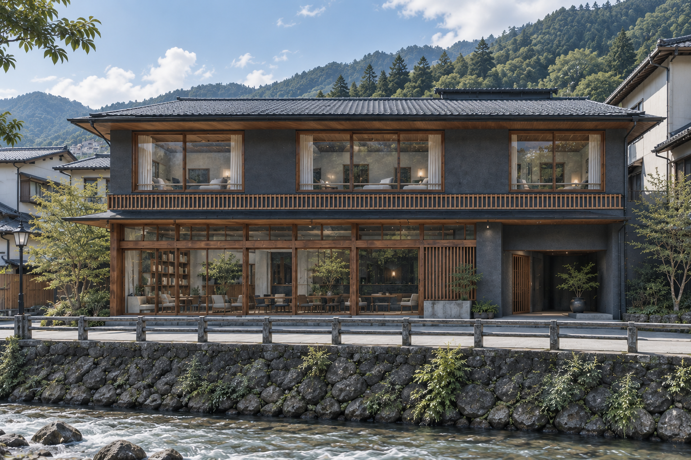
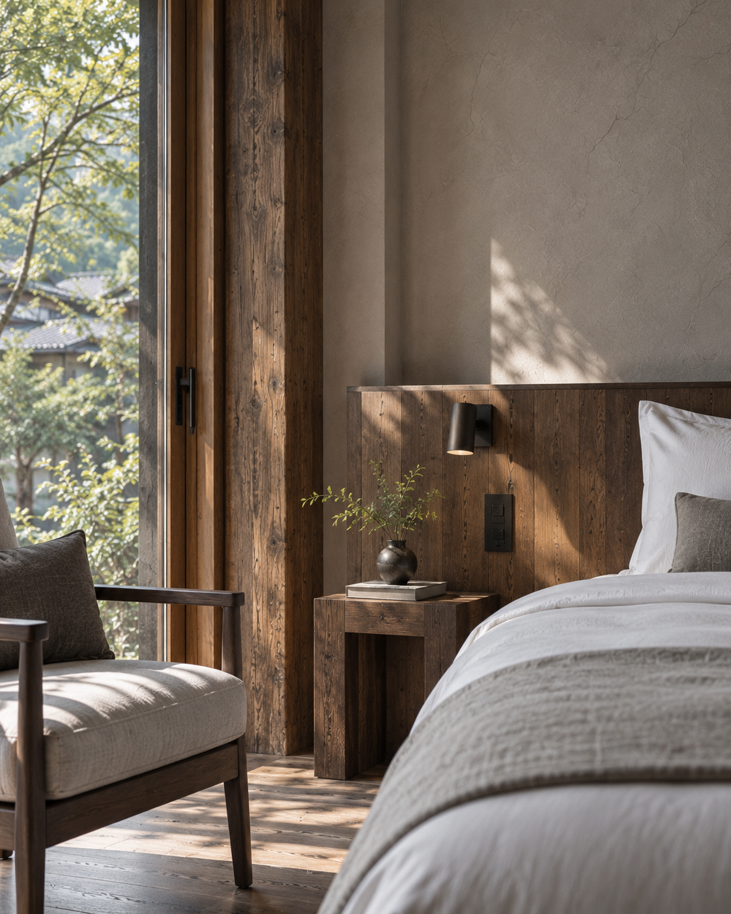
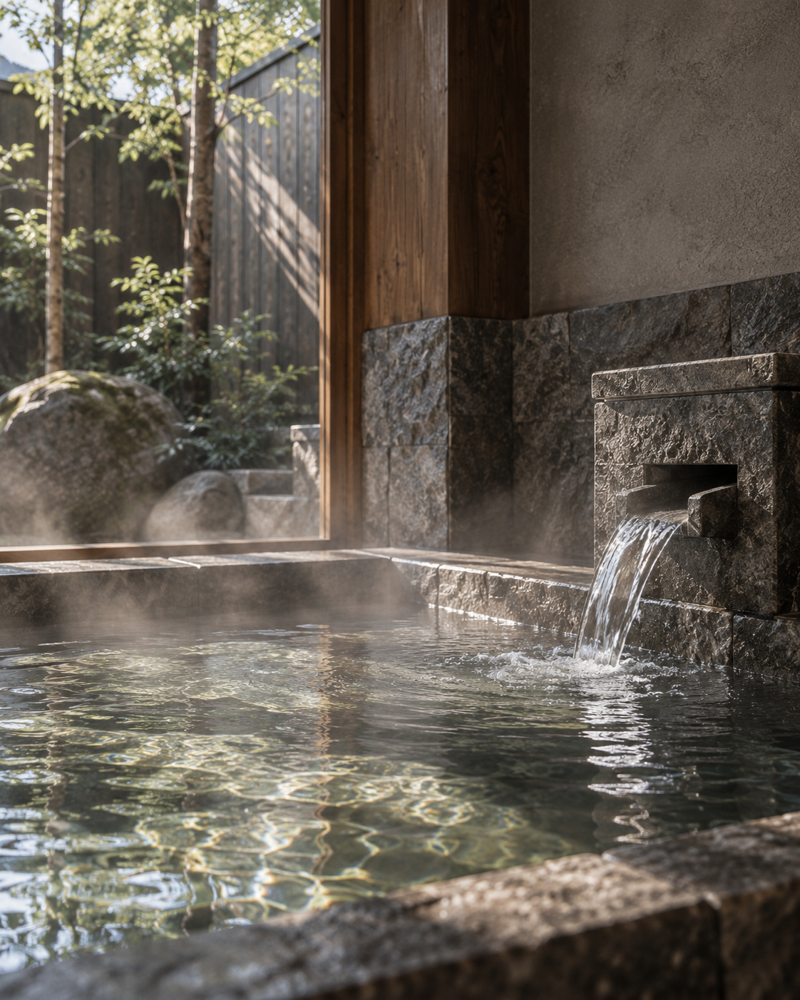
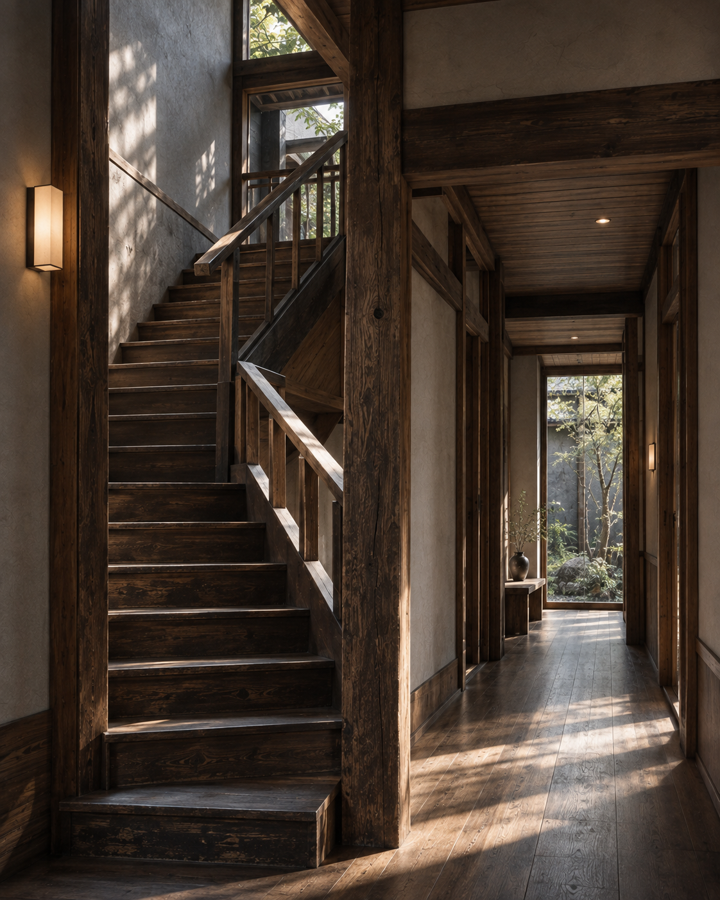

02 — STORY
残す。
変える。
なくす。
建物を新しくする前に、
何を次へ残すべきかを考えました。

1968
1968年に建った旅館
山あいの小さな温泉地。
川沿いに建てられたこの旅館には、
12の客室と浴場、
小さな中庭がありました。
時代とともに町の風景は変わり、
旅館も一度、
その役割を終えます。

THE EDIT
改修の方針
再生するときに、
古いものをすべて残すことはしませんでした。
新しいものへすべて置き換えることも、
しませんでした。
今もここにある意味を持つものだけを、
ひとつずつ選び直しました。
- 01KEEP
- 02CHANGE
- 03REMOVE
01 — KEEP
残したもの
柱、木製の建具、中庭、浴場の石を残しました。

WOODEN FRAMES / COURTYARD
02 — CHANGE
変えたもの
水回りと断熱を見直し、照明と家具を新しくしました。


BATH / STONE / NEW LIGHT
03 — REMOVE
なくしたもの
4つの客室と一部の間仕切り、使われなくなった設備を取り除き、空間を広げました。

12室から、8室へ。
より多く泊まれる宿にするのではなく、
より長く過ごしたくなる宿へ。
客室を減らし、
一室あたりの空間と、
共用部を広げました。
効率ではなく、
ここで過ごす時間を基準にした選択です。
MATERIALS
建物の素材
NEXT, NOT NEW.
旅館を継ぐ
建物に積み重なった時間を消さず、
今の暮らしに必要な形へ整える。
TSUGIという名前には、
「継ぐ」と「次」の二つの意味を込めています。
ここからまた、
この建物に新しい時間が重なっていきます。
